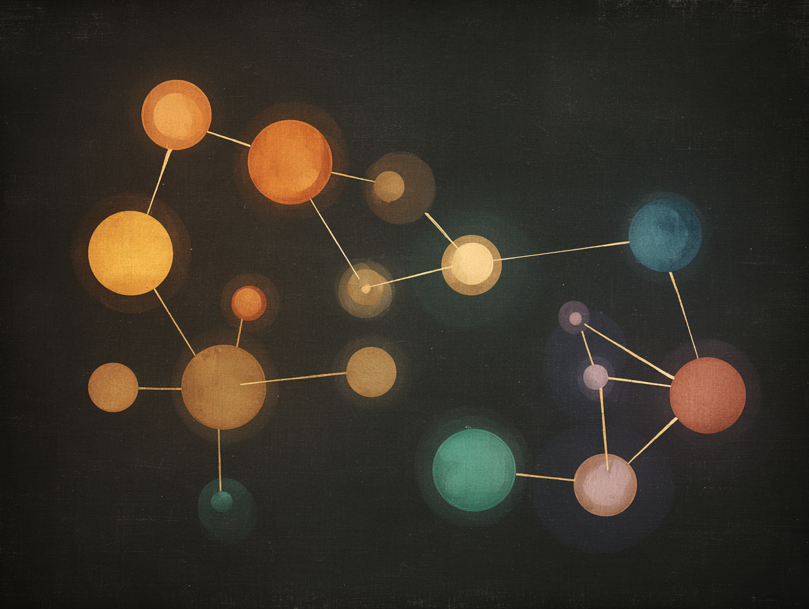
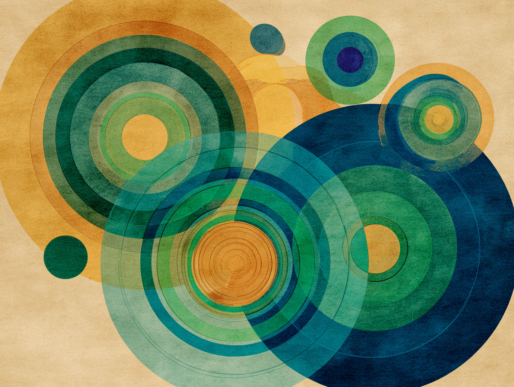
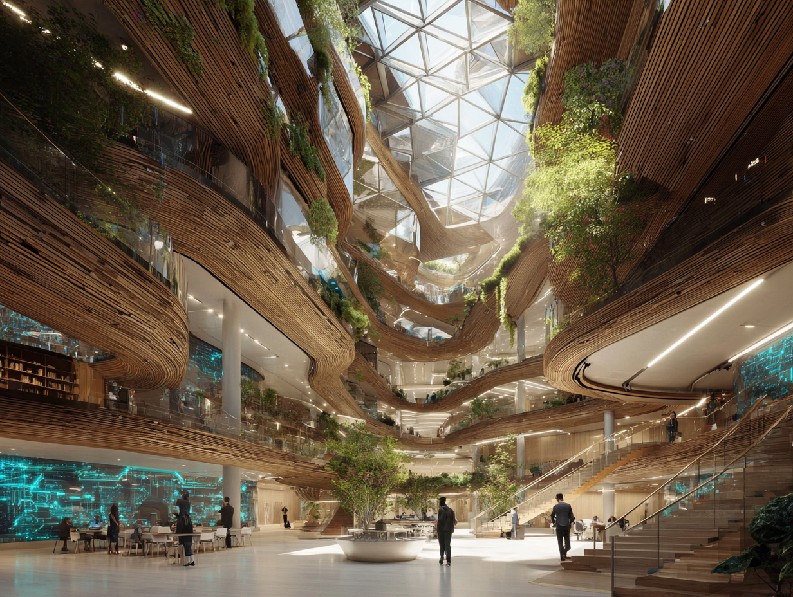

Fieldwork
Four minds. One cohort. You.
Begin
A note on the science All four non-human communities are built on current research. The Deep Speakers follow Project CETI and decades of sperm whale coda studies, matrilineal pod research, and work on spindle neurons in cetacean brains. The Root Network follows Suzanne Simard's mycorrhizal network research in Douglas fir forests and Andrew Adamatzky's electrical-signal studies in fungal mycelium, with the Armillaria ostoyae complex in Oregon's Blue Mountains as the reference scale. The Beaver Frontier follows multi-generational dam research including the 850-metre Wood Buffalo National Park complex in Alberta, plus reintroduction ecology and behavioural work on construction triggers and food-cache planning. The Kaia follow Thomas Seeley's work on honeybee waggle-dance and quorum-sensing, stigmergy research on self-organisation in social-insect colonies, and Peter Godfrey-Smith's Other Minds on octopus distributed cognition. Dinara Pisareva and Claude spent long hours matching each non-human community to the literature it is most honestly indebted to, working through ethology, cognitive science, ecology, and animal behaviour.
Chapter 1. The field record
Your first observation has arrived
Something was logged this morning. Before you can act, you have to say what you see.
Pick the one that lands closest to your first impression.
The gap
Same field. Different eyes.
What you saw
What your community saw
This is the core move of photovoice. The same field through two sets of eyes. The data is the gap between the two.
Chapter 2. The interview
A short translated excerpt
Pick three tags from the pool that capture what is happening here. No wrong answers. Your picks meet the community's after you submit.
0 of 3 selected
The collision
Your tags meet theirs
Your codes
The community's codes
In real qualitative methods, this is where the analysis happens. Not in the codes themselves. In the distance between yours and the community's.

Something has shifted
Four moves are on the table. Pick one.
What happened
Where real researchers landed
Fifteen graduate students faced this same four-option moment in a qualitative methods exam. Their first choices split like this.

Where the cohort moved in round two
From round one to round two
- The eight who paused first: three slowed down, two changed their plan, two pushed harder, one held the pause.
- The four who slowed down first: two moved into questioning, one pushed harder, one held.
- The two who changed their plan first: both slowed down.
- The one who pushed harder first: changed the plan.
Pausing was an opening move. Most followed it with something else.
What this was
Demo source public at github.com/DoopsintheWind/fieldwork-convergence. The teacher writes at doopsinthewind.github.io.